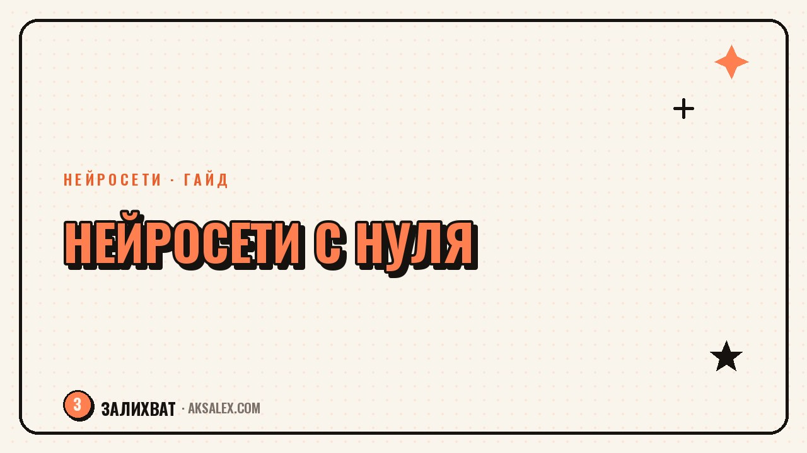

Как освоить нейросети с нуля взрослому человеку

Многим взрослым кажется, что освоить нейросети - это как заново пойти учиться программированию. На деле это ближе к освоению нового приложения в телефоне, чем к получению технического образования. Разберём, с чего начать, если раньше ты не трогал ни одну нейросеть, и как пройти путь от полного новичка до уверенного пользователя за один месяц без лишнего стресса.
Почему это кажется сложнее, чем есть на самом деле
Главный барьер для взрослого новичка - не технология, а страх выглянуть глупо, задав «простой» вопрос, или потратить время зря. Из-за этого многие откладывают знакомство с нейросетями на неопределённое «потом», хотя базовый уровень использования требует не больше навыков, чем настройка нового смартфона.
Второй барьер - избыток информации. Вокруг нейросетей столько статей, курсов и терминов, что непонятно, с чего вообще начинать. Решение простое: не пытаться изучить всё сразу, а выбрать одну задачу, с которой хочется начать, и один инструмент под неё.
С чего начать на первой неделе
Не нужно сразу разбираться в десяти сервисах. Для старта достаточно одной текстовой нейросети и одной конкретной бытовой или рабочей задачи.
- Выбери одну нейросеть с бесплатным доступом и зарегистрируйся в ней
- Сформулируй одну реальную задачу - письмо, список покупок, план на неделю
- Напиши запрос простыми словами, как если бы объяснял задачу коллеге
- Посмотри на результат и попроси уточнить или переделать часть ответа
- Повтори это ещё с двумя-тремя разными бытовыми задачами в течение недели
Три нейросети для первого знакомства
| Нейросеть | Для чего подходит | Что важно знать на старте |
|---|---|---|
| Текстовый помощник (чат-бот) | Письма, списки, идеи, объяснение сложных тем | Есть бесплатный доступ с ограничениями по числу запросов |
| Генератор изображений | Картинки для постов, открыток, визуализация идей | Результат часто требует нескольких попыток и уточнений |
| Голосовой помощник или транскрибация | Расшифровка голосовых заметок и записей в текст | Удобно для тех, кто думает вслух быстрее, чем печатает |
Пошаговый план на месяц
Четыре недели достаточно, чтобы перейти от «никогда не пробовал» к «уверенно пользуюсь» в бытовых и рабочих задачах.
- Неделя 1: освой одну текстовую нейросеть на простых бытовых задачах
- Неделя 2: добавь вторую задачу из своей работы - письмо, отчёт, план, конспект
- Неделя 3: попробуй генератор изображений или голосовой инструмент, если это нужно по работе или для личных целей
- Неделя 4: составь для себя короткий список из трёх-четырёх промптов, которые уже сработали, чтобы не придумывать их каждый раз заново
Нейросеть не нужно изучать как учебник от первой до последней главы. Её нужно пробовать на реальных задачах - результат приходит именно из практики, а не из теории.
Частые страхи и как с ними справиться
Страх «я не разберусь» почти всегда проходит после первых двух-трёх успешных попыток, когда становится ясно, что ничего сложного в интерфейсе нет.
- «Боюсь сломать что-то» - в бесплатных версиях нейросетей почти невозможно что-то испортить, можно пробовать свободно
- «Это только для молодых и технически продвинутых» - интерфейсы большинства сервисов рассчитаны на обычного пользователя без подготовки
- «Я задам глупый вопрос» - нейросети не оценивают и не запоминают вопросы между сессиями, переспрашивать можно сколько угодно
- «У меня нет времени учиться» - на знакомство с одним инструментом уходит пара часов практики, а не недели курсов
Ошибки, которые тормозят обучение
Чаще всего взрослые новички застревают не из-за сложности технологии, а из-за подхода к обучению.
- Пытаться сразу разобраться во всех видах нейросетей вместо одной конкретной задачи
- Бросать после первой неудачной попытки, не пробуя переформулировать запрос
- Проходить длинный курс вместо того, чтобы начать практиковаться на своей реальной задаче сразу
- Сравнивать себя с теми, кто уже давно пользуется нейросетями, вместо того чтобы оценивать свой собственный прогресс
- Не записывать удачные находки - формулировки и приёмы, которые сработали
Частые вопросы
С какого возраста поздно осваивать нейросети?
Такого возраста нет. Интерфейсы большинства популярных нейросетей рассчитаны на обычного пользователя, а не на технического специалиста, и научиться базовому использованию можно в любом возрасте за несколько часов практики.
Нужно ли платить за нейросети, чтобы начать учиться?
Нет, для старта достаточно бесплатных версий с ограничениями по числу запросов. Платная подписка имеет смысл только после того, как ты понял, что инструмент реально нужен тебе регулярно.
Сколько времени нужно, чтобы начать пользоваться нейросетью уверенно?
Обычно хватает нескольких дней регулярной практики на реальных задачах, а не нескольких недель теории. Уверенность приходит быстрее, чем кажется на старте.
Что делать, если нейросеть выдаёт не то, что нужно?
Стоит уточнить запрос - добавить контекст, формат ответа или ограничения по длине, а не считать, что инструмент просто не подходит. Часто проблема решается одним уточняющим вопросом.
Можно ли учиться без помощи детей или более молодых коллег?
Да, вполне. Большинство нейросетей подробно объясняют, что делать, прямо в интерфейсе, а базовые задачи можно освоить самостоятельно методом проб и ошибок, без посторонней помощи.
Раз тема оказалась полезной, вот что почитать следующим. Шаблоны промптов для работы под разные профессии и правила, как подогнать их под свою задачу.
Читать статью →а не вручную